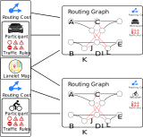
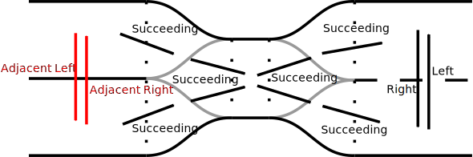
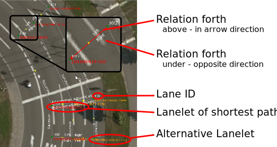

name: inverse layout: true class: center, middle, inverse --- # Lanelet2 Routing --- layout: false # Agenda ### 1. Motivation ### 2. Components & Terminology ### 3. Initialization & Workflow ### 4. Export functions (Debugging) ### 5. Query examples * Relations * Shortest paths & Routes ### 6. Routes --- # 1. Motivation * Maps are needed for various aspects of autonomous driving<br> <img src="images/mind_map_marked.svg" alt="Drawing" style="padding-right: 30px; width: 400px;"/> <img src="images/lanelet_map.png" alt="Drawing" style="width: 250px;"/> * Add routing semantics to lanelet information in map * Provide routing graphs different traffic participants * Answer spacial queries like: * E.g. left, right, succeeding lanelets * Determine routes and driving routes --- # 2. Components  **Routing Cost Modules:** * Determine routing cost of using a lanelet * Can be e.g. distance, time * *Influences the prefered path* **Traffic Rules** * Determines which lanelets are passable * *Influences the possible paths* **Lanelet Map:** * Map with Lanelets, Regulatory Elements, ... --- # 2. Routing Graph Answer queries regarding relations to other lanelets * Possible relations: * `left`, `right` (reachable though lane change) * `adjacent left`, `adjacent right` (directly adjacent but not legally reachable) * `succeeding` * `conflicting` Reachable set of lanelets: * Lanelets that can be reached within a specified amount of routing cost Possible routes: * Routes that can be taken starting at a given lanelet  --- # 2. Routing Graph .pull-strong-left[ #### Shortest Path * A shortest path from A to B, possibly with intermediate points * Data-wise simply a vector of lanelets #### Route * Includes all **directly** adjacent lanelets of a route that can used to reach B * Data-wise an own class that holds relations between the lanelets * Answers queries regarding relations within the route (e.g. left, right, ...) * Independent from the routing graph * Determines and returns lanes * `Lane` is a number of consecutive lanelets in a route until they end, merge or diverge ] .pull-light-right[ ##### Shortest Path: <img src="images/straight_shortest_path.svg" alt="Drawing" style="float: right; width: 200px; padding-bottom:20px;"/> ##### Route: <img src="images/straight_route.svg" alt="Drawing" style="float: right; width: 200px;"/> ] --- # 3. Initialization and workflow #### Load map (*lanelet2_io*): ```cpp auto uniqueMap = load("map.osm"); LaneletMapPtr map = std::move(uniqueMap); ``` #### Initialize traffic rules (*lanelet2_traffic_rules*): ```cpp TrafficRules::Configuration vehicleConf; TrafficRulesPtr trafficRules{ TrafficRulesFactory::instance().create(Locations::Germany, Participants::Vehicle, vehicleConf)}; ``` #### Routing cost calculation module: ```cpp constexpr double LaneChangeCost{2.}; std::unique_ptr<RoutingCostDistance> distancePtr( std::make_unique<RoutingCostDistance>(LaneChangeCost)); ``` --- # 3. Initialization and workflow #### Optional: Initialize config for routing graph: ```c++ RoutingGraph::Configuration routingGraphConf; routingGraphConf.emplace(std::make_pair( RoutingGraph::ParticipantHeight, Attribute("2."))); ``` #### Prepare routing cost module(s): ```cpp RoutingCostUPtrs costPtrs; costPtrs.push_back(std::move(distancePtr)); RoutingCostId routingCostId{0}; ``` #### Create routing graph: ```cpp RoutingGraphPtr graph = std::make_shared<RoutingGraph>( map, trafficRules, costPtrs, routingGraphConf); ``` --- # 4. Export Functions (Debugging) Export into: * Lanelet Map for routing information * DOT file format (GraphViz) * GraphML file format (xml-based) .pull-strong-left[ #### Lanelet Map <img src="images/lanelet_map_routing.svg" alt="Drawing" style="width: 550px;"/> ] .pull-light-right[ #### Graph <img src="images/graph_view_gephi.png" alt="Drawing" style="width: 200px;"/> ] --- # 5. Query examples - Relations #### Queries that return lanelets ```c++ // Get routable left lanelet if it exists Optional<ConstLanelet> left = graph->left(*fromLanelet); // Get non-routable left lanelet if it exists Optional<ConstLanelet> adjacentLeft = graph->adjacentLeft( *fromLanelet); // Get following lanelets ConstLanelets following = graph->following(*fromLanelet); ``` #### or queries that return relations: ```cpp // Get relations to all left lanelets ConstLaneletRelations leftRelations = graph->leftRelations( *fromLanelet); // with using ConstLaneletRelation = std::pair<ConstLanelet, RelationType>; ``` --- # 5. Query examples - Shortest Paths and Routes #### Shortest Path ```cpp ConstLanelets shortestPath = graph->shortestPath(*fromLanelet, *toLanelet, routingCostId); ``` * `shortestPath` will be empty if there's no route. * there's also `shortestPathWithIntermediate` #### Get and write a route ```cpp Optional<Route> route = graph->getRoute(*fromLanelet, *toLanelet, routingCostId); write(std::string("route.osm"), *route->getLaneletMap()); ``` * `Optional` will be uninitialized (false) if there's no route * This lanelet map will include all lanelets that are part of the route * As said, a route is independent from the routing graph --- # 6. Routes Example route through `Oststadtkreisel`: <img src="images/lanelet_map_route_oststadtkreisel.jpg" alt="Drawing" style="width: 670px;"/> --- # 6. Routes Output of `getDebugLaneletMap()` function:  --- # 6. Routes #### Example relational queries on routes: ```cpp // Get left lanelet of example lanelet 'll' Optional<ConstLaneletRelation> left = route->leftRelation(ll); // Get conflicting lanelets of 'll' ConstLanelets conflicting = route->conflictingInRoute(ll); ``` Note that a route just returns relations to lanelets that can be used to reach the goal. #### Other example queries: ```cpp // Get underlying shortest path ConstLanelets shortestPath = route->shortestPath(); // Get the full lane of a given lanelet 'll' ConstLanelets fullLane = route->fullLane(ll); // Get remaining lane of a given lanelet 'll' ConstLanelets remainingLane = route->remainingLane(ll); ``` --- # Side notes and limitations .pull-strong-left[ * Routing Lanelet Maps best viewed with the provided JOSM map styles * Routing Graph and Routes provide a `checkValidity()` (refer to lanelet2_validation for sanity checking) ## Questions and suggestions! ] .pull-light-right[ <img src="images/josm_styles.png" alt="Drawing" style="width: 200px;"/> ]